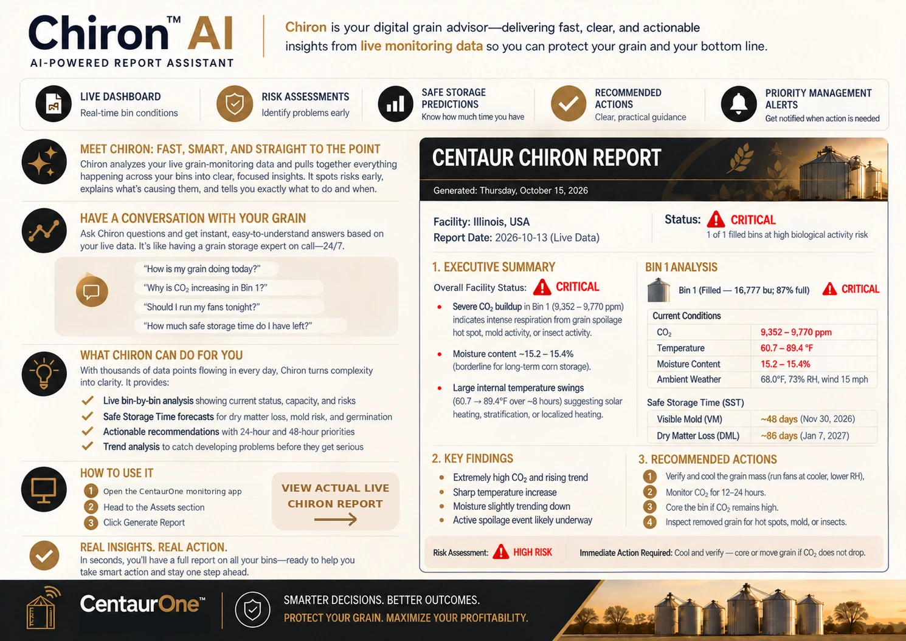

Don't Just Monitor Your Grain. Have a Conversation About It.
Meet Chiron — Your AI Grain Management Advisor.
Your corn is in the bin. Winter is coming. Instead of wondering what is happening inside your stored grain, ask Chiron. Get understandable explanations of grain conditions, potential risks, and practical next steps—all informed by CentaurOne's Arrow sensor, CFD Digital Twin, and weather data.
Less guesswork. More confidence. A smarter way to manage stored grain.
What would you ask Chiron?
Here's how a conversation about your stored grain might begin.
Illustrative conversation based on the October 27 report below—not a verbatim transcript. Recommendations should be verified against current conditions.

Monthly Grain Storage Report — Internet-of-Crops®
Report date: October 27, 2026 · Illinois, USA · Example report
Inventory: 691,919 kg (~692 metric tonnes; approximately 27,200 bushels if corn)
Bin fullness: 100% (filled)
1. Executive Summary
Overall status: ⚠️ Warning-to-Critical quality flag. The flag is driven by a grain-condition risk assessment, not elevated CO₂.
- Moisture: 14.55–14.59%—potentially borderline for longer storage depending on temperature, grain type and uniformity.
- Temperature: sensor readings increased from approximately 58.3°F to 61.5°F; ambient temperature was 49.5°F.
- CO₂: 393–563 ppm, within the report's normal range; no strong CO₂ spoilage signature at the time.
2. Bin-by-Bin Analysis
Example Corn Bin — Filled
| Measurement | Reported conditions |
|---|---|
| Temperature | 58.3–61.5°F |
| Moisture content | 14.55–14.59% |
| CO₂ | 393–563 ppm |
| Relative humidity | Not supplied |
Interpretation: Grain is warmer than outside air and recent readings trend upward. CO₂ is not elevated, but moisture and temperature should be managed and monitored.
Safe Storage Time Estimates
| Metric | Reported projected date |
|---|---|
| Dry Matter Loss (DML) | October 4, 2027 (~342 days from report date) |
| Visible Mold (VM) | October 26, 2027 (~364 days from report date) |
| GRM | Not provided |
Important: These are model projections, not guarantees. The platform's warning-to-critical quality flag signals a present management concern even though the reported long-range model dates are far away. The flag and projections should be reconciled with actual grain conditions.
Recent Trends
- Temperature rose toward 61.5°F.
- CO₂ varied modestly and ended at 563 ppm.
- Moisture remained approximately 14.55–14.59%.
3. Priority Actions
- Aeration: Consider cooling during suitable outside-air conditions; check local temperature, humidity, and the bin's airflow characteristics before running fans.
- Moisture: Verify grain moisture at multiple accessible locations using safe sampling methods.
- Inspection: Check for condensation, crusting or unusual odors from safe external access points. Never enter a grain bin without proper procedures and equipment.
- Data: Confirm whether relative humidity and other telemetry streams are available before relying on them for decisions.
4. Technical Insights
Warm grain combined with borderline moisture can increase the risk of moisture migration, condensation, insects and localized spoilage. CO₂ is a useful warning indicator, but no single reading confirms grain quality throughout the entire bin.
Practical principle: Grain moisture × temperature × storage time all affect risk. Fan operating decisions should account for weather, airflow and the intended storage period.
Did You Know?
At $4 per bushel, even a 1% loss in 30,000 bushels represents $1,200 in grain value. Actual preventable loss varies by operation.
Example report dated October 27, 2026. Edited for readability and anonymized. It is not a live assessment or a substitute for on-site grain safety practices.